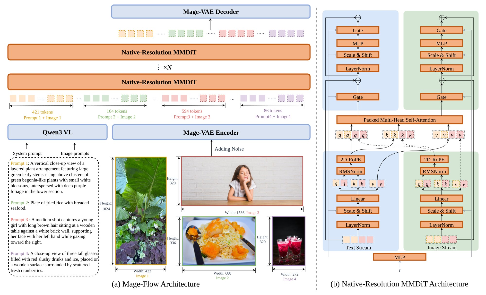

Generation frontier
GenEval quality against end-to-end latency and peak memory at 1024².

Compact visual generation
Native-resolution image generation, precise instruction-based editing, and interactive four-step inference in one lightweight model family.
Latency measured at 1024² on a single NVIDIA A100. Benchmark results follow the unified protocol in the technical report.
Quality × speed × memory
Mage-Flow sits on the quality–latency–memory frontier for both generation and editing, while keeping peak memory around 18–20 GB.
GenEval quality against end-to-end latency and peak memory at 1024².
GEdit-EN quality against end-to-end latency and peak memory at 1024².

Benchmark highlights
The headline results below emphasize the quality delivered by the 4B family. Full comparison tables remain available for reproducibility.
| Model | Params | GenEval |
|---|---|---|
| Mage-Flow | 4B | 0.90 |
| FLUX.2-dev | 32B | 0.87 |
| Qwen-Image | 20B | 0.87 |
| FLUX.2-Klein-9B | 9B | 0.86 |
| Model | Params | GEdit-EN |
|---|---|---|
| Mage-Flow-Edit-Turbo | 4B | 8.271 |
| FLUX.2-Klein-9B | 9B | 8.040 |
| Qwen-Image-Edit-2511 | 20B | 7.877 |
| LongCat-Image-Edit | 6B | 7.748 |
| Model | #Params | Steps | GenEval ↑ | TIIF-Long | CVTG-2K | OneIG-EN | LongText-EN |
|---|---|---|---|---|---|---|---|
| Qwen-Image | 20B | 50 | 0.87 | 86.83 | 0.829 | 0.539 | 0.943 |
| LongCat-Image | 6B | 50 | 0.87 | 81.30 | 0.866 | 0.516 | 0.885 |
| Z-Image-Turbo | 6B | 8 | 0.82 | 80.05 | 0.859 | 0.528 | 0.917 |
| FLUX.2-Klein-4B | 4B | 4 | 0.83 | 79.04 | 0.628 | 0.500 | 0.649 |
| FLUX.2-Klein-9B | 9B | 4 | 0.86 | 84.13 | 0.424 | 0.538 | 0.872 |
| Mage-Flow-Base | 4B | 30 | 0.79 | 83.19 | 0.851 | 0.542 | 0.904 |
| Mage-Flow | 4B | 20 | 0.90 | 84.70 | 0.887 | 0.536 | 0.944 |
| Mage-Flow-Turbo | 4B | 4 | 0.88 | 84.16 | 0.873 | 0.523 | 0.911 |
GenEval, CVTG-2K, OneIG, and LongText are reported on 0–1 scales; TIIF-Long is reported on a 0–100 scale.
| Model | #Params | Steps | ImgEdit ↑ | GEdit-EN | GEdit-CN | TextEdit-Syn | TextEdit-Real |
|---|---|---|---|---|---|---|---|
| Qwen-Image-Edit-2509 | 20B | 50 | 4.31 | 7.480 | 7.467 | 13.40 | 15.81 |
| Qwen-Image-Edit-2511 | 20B | 50 | 4.51 | 7.877 | 7.819 | 13.53 | 16.81 |
| Z-Image-Edit | 6B | 50 | 4.30 | 7.570 | 7.540 | – | – |
| LongCat-Image-Edit | 6B | 50 | 4.45 | 7.748 | 7.731 | 12.46 | 14.89 |
| FLUX.2-Klein-4B | 4B | 4 | 4.01 | 7.717 | 7.750 | 11.84 | 14.46 |
| FLUX.2-Klein-9B | 9B | 4 | 4.18 | 8.040 | 8.055 | 12.73 | 15.75 |
| Mage-Flow-Edit-Base | 4B | 30 | 4.28 | 7.860 | 7.970 | 13.63 | 15.57 |
| Mage-Flow-Edit | 4B | 30 | 4.34 | 8.127 | 8.123 | 14.14 | 16.26 |
| Mage-Flow-Edit-Turbo | 4B | 4 | 4.38 | 8.271 | 8.264 | 12.77 | 15.41 |
ImgEdit is reported on a 0–5 scale, GEdit on a 0–10 scale, and TextEdit on a 0–25 scale.
Qualitative results
Explore native-resolution generation, bilingual text rendering, source-faithful editing, restoration, and one-to-many creative variation.
Source → result across a broad editing taxonomy.
Why it works
The full recipe stays in the technical report. The project page keeps only the three design choices that explain the quality and efficiency.
One-step encoding and decoding remove the high-resolution tokenizer bottleneck while preserving a generation-ready latent space. Mage-VAE matches strong reconstruction quality with ~12× / ~22× fewer encode / decode MACs per pixel.

One-step diffusion encode/decode with anchor-latent regularization.
Variable-length image and text packing avoids rigid resolution buckets and unnecessary padding. One shared 4B backbone supports flexible canvases from 512 to 2048 pixels, including extreme aspect ratios, while packed CFG evaluates both branches in one forward pass.

Packed native-resolution image and text tokens through the shared NR-MMDiT.
The same compact stack powers generation and editing, each available as Base, aligned, and 4-step Turbo variants. Stack-level optimization and quality-preserving distillation make high-resolution inference interactive.
Quality, latency, and memory at 1024² on a single NVIDIA A100.
Model family
Generation and editing share the same compact stack, each released as Base, aligned, and four-step Turbo variants.
Explore the models, reproduce the results, or use the 4B stack as a foundation for generation and editing research.


{kind=link}
{kind=link}
{kind=link}
{kind=link}
{kind=link}
{kind=link}
{kind=link}
{kind=link}
{kind=link}
{kind=link}
{kind=link}
{kind=link}